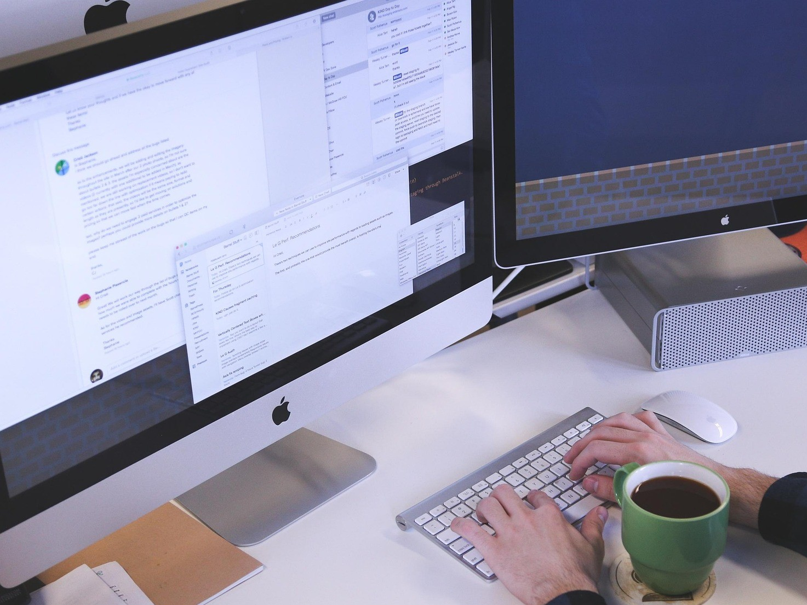

Klar for å gå videre?
Vil du ha hjelp til en byggesak - eller vurdere OddGPT som assistent i din virksomhet? Ta kontakt for en uforpliktende prat.


I over 20 år har jeg jobbet med byggesaker - både som kommunal saksbehandler og privat rådgiver.
Nå kombinerer jeg denne erfaringen med moderne teknologi.
Resultatet? Et tilbud til deg som vil ha tydelighet, fremdrift og faglig
trygghet i byggesaken din:
- Du kan bruke meg som rådgiver og ansvarlig søker
- Eller du kan ta i bruk OddGPT - en digital byggesaksassistent for fagfolk
Begge deler bygger på samme grunnmur: praktisk erfaring, tydelig kommunikasjon - og respekt for at byggesak kan
være både komplisert og tidkrevende.
OddGPT er en AI-assistent jeg har utviklet for deg som jobber profesjonelt med byggesøknader og byggesak:
OddGPT er trent på tusenvis av reelle saker - og gir deg rask støtte i spørsmål om:
OddGPT erstatter ikke deg som fagperson - men fungerer som en sparringspartner og effektiv veiviser. Du kan leie den som en del av din rådgivningstjeneste - med eller uten opplæring.
Trenger du hjelp i én konkret sak - eller ser du etter en fast rådgiver? Jeg tilbyr:
OddGPT er en naturlig del av mitt arbeid. Det gir deg raskere svar, bedre dokumentasjon og tydeligere kommunikasjon.
Vil du ha hjelp til en byggesak - eller vurdere OddGPT som assistent i din virksomhet? Ta kontakt for en uforpliktende prat.